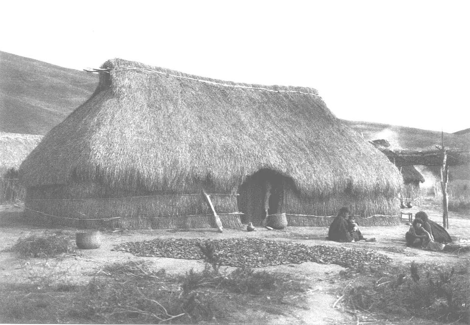

Mapuche, la gente de la tierra

El Pueblo Mapuche es el pueblo originario más numeroso de Chile. Su territorio histórico, el Wallmapu, abarcaba el centro y sur del actual Chile y también el oriente de la cordillera, en la actual Argentina. Incluía identidades territoriales como picunches (gente del norte), huilliches (gente del sur), pehuenches (gente del pehuén) y lafkenches (gente del mar).
La arqueología identifica antecedentes en el complejo Pitrén y, desde alrededor del año 1100 d.C., en el complejo El Vergel, asociado a la expansión de la agricultura, la cerámica pintada y los entierros en urnas. Antiguamente se pensaba que los mapuche habían llegado desde el oriente de los Andes; hoy muchos investigadores destacan la continuidad de las poblaciones locales.
La sociedad mapuche no formó un Estado centralizado. Se organizaba en comunidades (lof) dirigidas por lonkos, que se aliaban en tiempos de guerra. Su espiritualidad, en la que las machis cumplen un rol central, se expresa en ceremonias como el ngillatun. Esta organización flexible ayudó a resistir al Imperio inca y luego a los conquistadores españoles, como muestran la Batalla de Tucapel y el Desastre de Curalaba.
Versión para niños
Mapuche quiere decir "gente de la tierra": mapu es tierra y che es gente. El pueblo mapuche vive desde hace siglos en el centro y sur de Chile, en un territorio que llama Wallmapu. Sus antepasados cultivaban papas, maíz y porotos, recolectaban piñones y vivían en rukas. Las familias se organizaban en comunidades guiadas por un lonko. Las machis cuidan la salud y la espiritualidad. Hoy es el pueblo originario más numeroso de Chile, y muchas personas hablan mapudungun.
Para maestros
Nivel sugerido: 2° básico
Objetivo: Conocer la forma de vida, la organización y la cosmovisión del pueblo mapuche, y reconocer su presencia actual. La fecha lleva "c." porque corresponde al inicio aproximado del complejo arqueológico El Vergel; la presencia de antepasados mapuche en el territorio es anterior.
Preguntas para la clase:
- ¿Qué significa la palabra mapuche?
- ¿Qué roles cumplen el lonko y la machi en una comunidad?
- ¿Qué palabras del mapudungun usamos en Chile sin darnos cuenta?
Actividad (20–30 min): Los estudiantes investigan palabras de origen mapudungun presentes en el castellano de Chile y en nombres de lugares (por ejemplo, Temuco o pichintún) y construyen un pequeño diccionario ilustrado del curso.
Fuentes sugeridas: Museo Chileno de Arte Precolombino; Memoria Chilena; Biblioteca del Congreso Nacional (BCN).
Objetivos de Aprendizaje (Currículum Nacional)
- 2° básico · HI02 OA 01 Describir los modos de vida de algunos pueblos originarios de Chile en el periodo precolombino, incluyendo ubicación geográfica, medio natural en que habitaban
- 2° básico · HI02 OA 02 Comparar el modo de vida y expresiones culturales de algunos pueblos indígenas presentes en Chile actual (como mapuche, aimara o rapa nui)
- 1° medio · HI1M OA 24 Evaluar … las relaciones de conflicto y convivencia con los pueblos indígenas (aymara, colla, rapa nui, mapuche, quechua, atacameño, kawéskar, yagán, diaguita)
Revisión humana pendiente. Cómo se revisa · Reportar un error
Cómo citar: Historia de Chile. (2026). Mapuche, la gente de la tierra. En Historia de Chile: atlas y línea de tiempo. https://moises-salgado.github.io/historia-de-chile/momento/mapuche-la-gente-de-la-tierra.html